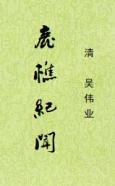

| 吴伟业全集 > |
| 鹿樵纪闻 |
| 作者：[清]吴伟业 |
|
鹿樵纪闻，三卷41篇，记事本末体野史，原题娄东梅村野史撰。记南明福王、唐王、鲁王、桂王诸事以及李自成、张献忠农民起义等节。《郑成功之乱》末尾云“郑氏自天启甲子为盗，传四世，至康熙甲子而灭”，其时吴伟业已去世十多年。则是后人有增补，并非原本，或者为后人伪托。 《闯献发难》云“福王以体肥不能远去，贼得而杀之，称其肉，重三百六十余斤，脔分股割，与鹿肉烹，群贼胪食，名曰福禄宴”，其墓志已出土（见附录），并未曾提及，当系小说家言。《序》凡四称“臣”，则原是要进献皇帝御览的。既然要“哈皇”，所持立场自然有所偏颇。可信度，与那些随笔所记，死后流传的笔记不能相提并论。 （2023-3-17，独孤氏整理，初校） |
 |